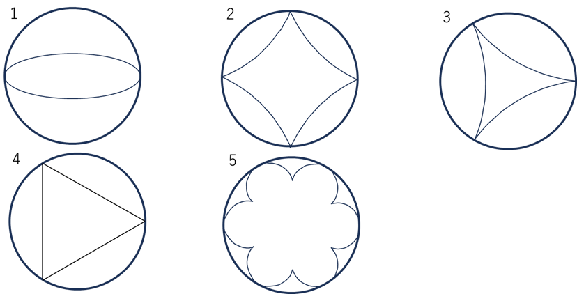

- 判断推理とは
- 勉強のポイント
- 公務員試験は時間内に数多くの問題を解かなければいけないため、一問あたりに使える時間が限られています。 練習の時から時間を意識して解くようにしてください。目安は一問あたり3~4分です。
- 解けた解けなかったで一喜一憂するのではなく、「どういう風に解いたか」や「その問題を解く上でのポイントはどこだったか （＝その問題から何を学んだか）」を意識して答え合わせをしてください。 （コレを意識するだけでほかの問題への応用力が結構変わります！）
- 演習問題
- 条件が厳しいもので場合分けを行うと場合分けの数が少なくなるため、時間短縮ができる。
- 条件を組み合わせたり、判明した内容から改めて条件文を検討することもある。
- 最終的にすべての事実が判明するとは限らない。よって、ある程度条件が揃ったらいったん選択肢を見て答えが導けないか確認する。
-
1対1の対応の問題であれば、表の一か所に○が付いたらその行と列のほかの欄は全て✕が記入される。
(詳しくは応用編を参照) - Aは係長である。
- Eは男性である。
- 女性のうちの一人は20歳代である。
- 係員のうちの一人は50歳代である。
- 課長は女性である。
- Aは、チワワを飼っている。
- Bは、プードルを連れた人に会った。
- Cは、柴犬を飼っている。
- Dは、ポメラニアンを連れた人に会った。
- Eは、プードルを飼っている。
-
条件が厳しいもので場合分けを行うと場合分けの数が少なくなるため、時間短縮ができる。
→ 具体的に記述されている人を見つけると良い (ex..端にいる。一番前。) - 条件を組み合わせは頻出のため、常に意識する。
- Ａは303号室に住んでおり，ピアノを演奏する。
- Ｆは1階に住んでおり，ドラムを演奏する。
- ＧはＨの一つ真下の部屋に住んでおり，楽器を演奏しない。
- Ｈは1階に住んでおり，フルートを演奏する。
- 3階には，Ａ～Ｈのうち3 人が住んでいる。
- 男性４人が購入したものは互いに異なっており、女性４人が購入したものも互いに異なっていた。
- 図において、右側のボックスシートの４人、左側のボックスシートの４人、通路側の席の４人が購入した飲み物は、それぞれ互いに異なっていた。
- Ａは図に示す席に座っており、Ａからみて右隣の人はコーヒーを購入した。
- Ｂは通路側であり、通路を挟んでＢの隣はＣである。Ｃの向かいは女性で、その女性はオレンジジュースを購入した。
- Ｃが購入したものはコーヒーではなかった。
- ＤとＥは女性である。
- Ｄはコーヒーを購入し、Ｈは野菜ジュースを購入した。
- Ａの向かいはＦである。
- Ｅの向かいの人は野菜ジュースを購入した。
- ＧとＨは窓側である。
- オレンジジュースを購入した人の向かいの人は緑茶を購入した。
- 野菜ジュースを購入した人からみて左側の人はコーヒーを購入した。
- 条件を組み合わせは頻出のため、常に意識する。
- 順序だてて考えていくと場合分け数が最小限に抑えられるため、わかりやすい条件から潰して順番に確定していく。
-
数量条件をわかりやすく把握するために、図や表などの作成は必ず行う。
(条件の式化、という作業も重要) - Aは1回目、Bは3回目に勝者となった。
- Cは1回目に3のカードを引いた。
- Aが2回目に引いたカードと、Cが3回目に引いたカードは同じであった。
- Bの得点は2点であり、また、Bは1回だけ3のカードを引いた。
- A、Bの得点は、いずれもCの得点より高かった。
- Aは2回目に3のカードを引いた。
- 各人が引いた3回のカードに書かれた数の総和が、最も小さいのはAである。
- Bは1回目に2のカードを引いた。
- 3回とも、3のカードと4のカードはどちらも必ずだれかが引いた。
- Cは1回も勝者とならなかった。
- 左にＡ・Ｃ・Ｅ、右にＤ・Ｆ・Ｇのメダルをのせたところつり合った。
- 左にＡ・Ｅ・Ｆ、右にＢ・Ｄ・Ｈのメダルをのせたところつり合った。
- 左にＡ・Ｅ・Ｆ、右にＣ・Ｄ・Ｇのメダルをのせたところつり合わなかった。
- 左にＢ・Ｄ・Ｈ、右にＥ・Ｆ・Ｉのメダルをのせたところつり合った。
- A
- B
- C
- D
- E
- 円の軌跡を考えるときは「円の中心がどれだけ動いたか」から「円が何回転したか」を考えるとよい。
- 円の内側を回転するときは接点の数は「回転数+1」
- 同一平面上に2点あれば、その2点を結んだ直線が切断線になる
- 平行な面には平行な切断線があらわれる。
- 立体全体が、複数の小立方体で構成されているような図形の時は、各段ごとにスライスして一段ずつ考えていく。
判断推理
判断推理は「数的処理」という分野に属しており、数的処理は「判断推理」、「数的推理」、「資料解釈」という3つの分野から
構成されています。「数的処理」は教養試験のなかで最も配点の高い科目であるため、この科目をおろそかにしてしまうと
大きく点数を落としてしまう結果となります。
判断推理は大きく「文章条件問題」と「図形問題」の二つに分けることができます。
聞きなれない科目だと思いますが、算数パズルのようなイメージをしていただくと良いかもしれません。
与えられた条件から正しいものを見つけ出す、というタイプの問題が多いため論理的な思考力が問われていると言えます。
判断推理の出題数は、年度や業種によって多少の変動はありますが「数的推理」と同じくらいで6~7問です。前述のとおり、「数的処理」自体も配点の高い分野ですが、その中でも判断推理はその出題数の4割近くを占めるため対策は不可欠な科目です。
同じく数的処理に分類される科目に「数的推理」という科目がありますが、それと比較すると 数学的な知識はあまり必要でない問題が多いため、とっかかりやすい科目であると感じています。 しかし、場合分けなど手間のかかる作業が多いため、問題に慣れるために多くの過去問に触れ、 解くための手順を理解していきましょう！
頻出テーマ1.対応関係
基礎編
ある課にはA～Fの６人の職員がおり，それらの職員の役職，性別，年齢層について次のことがわかっているとき，確実にいえるのはどれか。
① 役職については，課長が１人，係長が２人，係員が３人である。
② 性別については，男性が４人，女性が２人であり，年齢層については, 50歳代が１人，40歳代が１人，30歳代が２人，20歳代が２人である。
③ Aは40歳代の男性で，Fよりも年齢層が高い。
④ Bは男性の係長であり，Fよりも年齢層が高い。
⑤ Cは女性であり，Dよりも役職，年齢層ともに高い。
⑥ E，Fは係員である。また，FはDよりも年齢層が高い。
⑦ 係員は，3人とも年齢層が異なる。
応用編
A～Eの5人は、それぞれ異なる種類の犬を1匹ずつ飼っている。犬の種類はチワワ、プードル、ダックスフント、ポメラニアン、柴犬である。
ある日5人は自分の犬を連れて散歩に行った。この5人に関して次のことが分かっているとき、確実にいえるのはどれか。
なお，以下の登場人物には, A～E以外の者は含まれていない。
① Aは、ダックスフントを連れた人とポメラニアンを連れた人に会ったが、Cには会わなかった。
② Bは、柴犬を連れた人に会ったが、Aには会わなかった。
③ Cは、チワワを連れた人に会った。
④ Eは、チワワを連れた人に会ったが、Dには会わなかった。
頻出テーマ2.位置関係
基礎編
図のような3階建て12室のマンションがある。このマンションには、Ａ～Ｈの8人がいずれかの部屋に1人ずつ住んでおり、4室は空室である。
Ａ～Ｈの8人のうち5人は音楽家で，それぞれピアノ， ヴァイオリン，フルート，ドラム， クラリネットのいずれか異なる一つの楽器を自室のみで演奏する。
音楽家が楽器を演奏するときには，自室のほか，両隣，一つ真上，一つ真下の部屋にも音が聞こえるが、それ以外の部屋には音が聞こえない。
また、音楽家でない3人は、楽器を演奏しない。次のことが分かっているとき、確実にいえるのはどれか。
① 101 号室には音楽家が住んでいる。また、104 号室は空室である。
② Ａは3 階に住んでいる。Ａの両隣の部屋のうち，部屋の番号が小さい方は空室で，もう一方は空室ではない。
③ Ｂは音楽家ではない。Ｂの部屋では，他の部屋からピアノ，フルート， ヴァイオリン， クラリネットを演奏する音が聞こえる。
④ Ｃは ヴァイオリンを演奏する。
⑤ Ｄの部屋では，Ａ，Ｃが楽器を演奏する音が聞こえる。
⑥ ＦとＨの部屋は隣どうしである。Ｆの部屋では，他の部屋からフルート， クラリネットを演奏する音が聞こえる。
⑦ Ｇは1 階に住んでいる。Ｇの部屋では，Ｃ，Ｈが楽器を演奏する音が聞こえる。
応用編
図のように、列車のボックスシートにＡ～Ｈの各４人ずつの男女、合わせて８人が向かい合わせに座っている。
８人は、車内販売でコーヒー、オレンジジュース、野菜ジュース、緑茶の４種類の飲み物から一つずつ購入した。
ア～キのことが分かっているとき、確実にいえるのはどれか。
頻出テーマ3.数量相互の関係
基礎編
A, B, Cの3人が、 1~4の数字が1つずつ書かれた4枚のカードを 用いて、次のようなゲームを3回行った。
毎回、裏返しにした4枚のカードからさんが 書かれた数が最も小さい者をその回の勝者とし、勝者はそのカードに書かれた数を得点とする。
次のア~オのことがわかっているとき、正しいのはどれか。
応用編
9 枚の同じ形、同じ大きさの金メダルＡ～Ｉがある。このうち 7 枚は 純金製で同じ重さであるが、 2 枚は金メッキをしたもので純金製より軽い。 天秤ばかりを使って、次のア～エのことが分かっているとき、金メッキのメダルはどれか。ただし、2 枚の金メッキのメダルは同じ重さである。
頻出テーマ4.移動・回転・軌跡
基礎編
下の図のように、同一平面上で直径3aの大きい円に、Ａの文字が描かれた直径aの円盤Ａが外接し、Ｂの文字が描かれた直径aの円盤Ｂが内接している。
円盤Ａと円盤Ｂがそれぞれ、アの位置から大きい円の外側と内側に接しながら、かつ、すべることなく矢印の方向に回転し、
大きい円を半周してイの位置にきたときの円盤Ａ及び円盤Ｂのそれぞれの状態を描いた図の組み合わせとして妥当なのはどれか。
応用編
図のように、Oを中心とする半径3の円に、Óを中心とする半径1の円が点Pで内接している。円Oの円周に沿って、 円Óを滑らないように矢印の向きに回転させ、元の位置に戻った時、円Óの円周上の点Pの軌跡として最も妥当なのはどれか。

頻出テーマ5.立体の切断・回転・結合
基礎編
20個の同じ大きさの立方体を貼り合わせて、上下左右前後のどの方面から見ても図Ⅰの形に見える図Ⅱのような立体を作った。 図Ⅱの立体を頂点A,B,Cを通る平面で切った時の断面として最も妥当なのはどれか。
応用編
下図のように、3つの立方体をL字形に並べた形状をした立体を、頂点A,BおよびCの3点を 通る平面で切断したとき、頂点Pを含む側の立体にできる切断面の形状として、妥当なのはどれか。